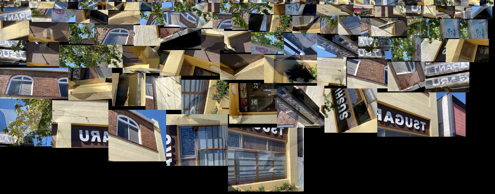
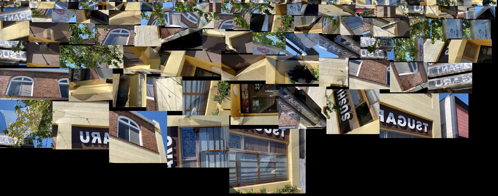

Discovery
Yat Jeung Toi was always a part of me growing up in San Jose. In San Jose Japantown, my mother always pointed to a bench marked with Ken Ying Low, one of the oldest Chinese restaurant on it. She said she knew chief Ng Guey, the man described as famous for his noodles he made there.
Ideation
Yat Jeung Toi was create through the discovery of the Japantown architecture. I wanted to create something that would be interaction and site specific according to the pre-existing environment around it.
I started with a similar prototyping phase previously used in Heroes of the Front. Check it out for further process description.
Prototyping
There was a lot of trial and error going into this. Since the animations are created in maya I had to pre-plan and then test import it into unity. Unity is where I turn it into an asset bundle and that is where the "magic" happens. This is the majority of my work. I have to create multiple prototypes with little tweaks and see what it looks like on the server.
Images
While 3D scanning, the camera takes multiple images as you walk around the building. The images create this texture and the 3D object is created based off this texture.


 
